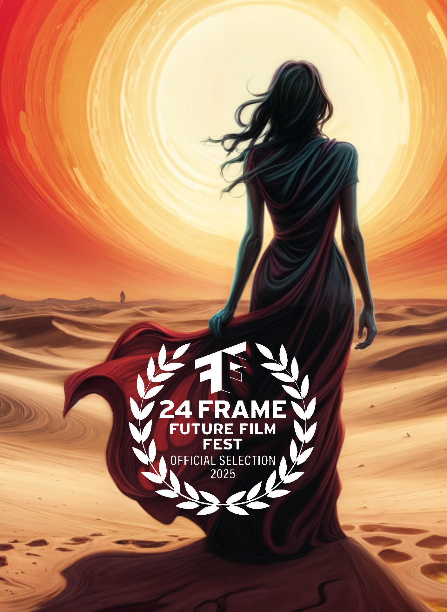

Ecos de fuego en el Desierto - Corto Animado
Un joven recuerda a su madre, desaparecida forzadamente en México. Desde el desierto, su voz regresa para consolarlo y darle esperanza. A través de su presencia espectral, ella no solo reconforta a su hijo, sino que también se convierte en un símbolo de resistencia para otras personas que sufren la misma tragedia. Este corto animado explora el amor, el duelo y la lucha por la justicia en un contexto de desapariciones forzadas.
A young men remembers his mother, who was forcibly disappeared in Mexico. From the desert, her voice returns to comfort him and offer hope. Through her spectral presence, she not only consoles her son but also becomes a symbol of resistance for other persons enduring the same tragedy. This animated short explores love, grief, and the fight for justice in the context of forced disappearances.
Esta #animación fue creada mayoritariamente con herramientas de Código Abierto. Basada en el cuento "Morenito" de Omar Durán Guerra.
This #animation was primarily created using open-source tools. Based on the short story "Morenito" by Omar Durán Guerra.
